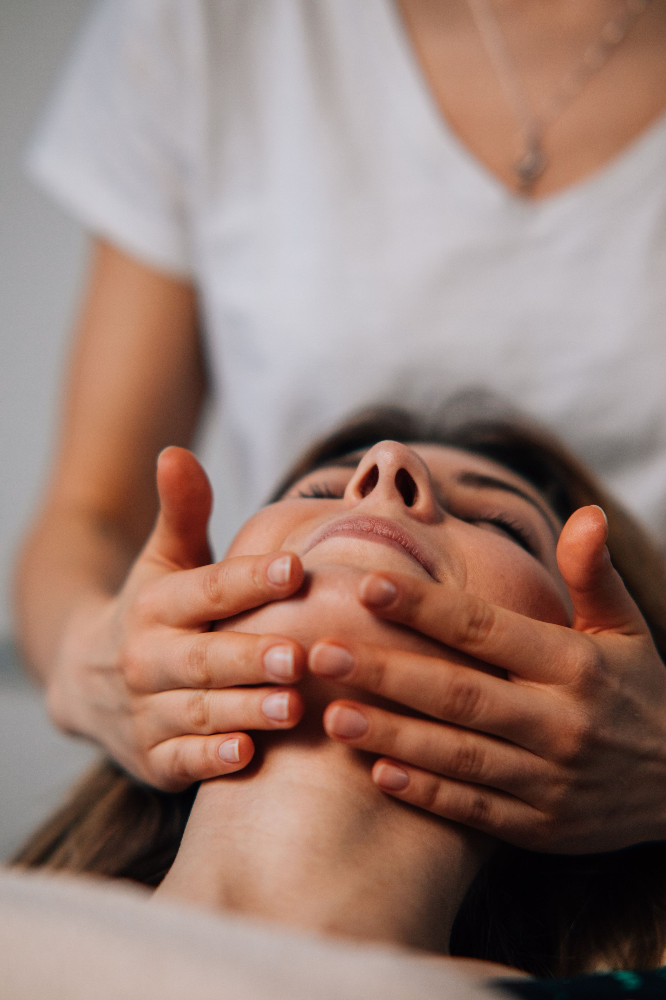
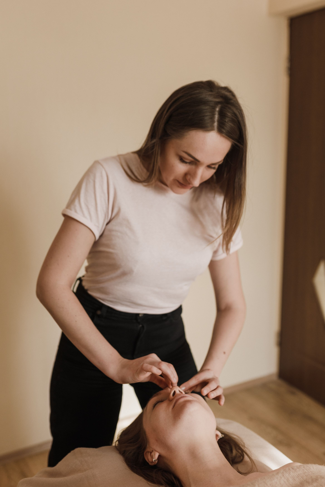

01
Facial care
フェイシャルケア
ゆっくり、やさしく、肌と向き合う。
手のぬくもりを感じるトリートメントで、
日常から少し離れるひとときを。


Care for your skin.
Room for yourself.
あなたの肌と、今日の気分に。
ケアのご案内
架空の企業情報を使用したデザインサンプルです
忙しさのなかで、つい後回しにしてしまう自分のこと。
肌に触れるひとときを、心までほぐれる時間に。
ナギハは、一人ひとりの気分と暮らしに寄り添う
美容サロンをイメージしたデザインです。
特別な日のケアも、毎日の小さな習慣も。
その日の肌や気分に合わせて選ぶ、ケアのサンプルをご紹介します。
フェイシャルケア
ゆっくり、やさしく、肌と向き合う。
手のぬくもりを感じるトリートメントで、
日常から少し離れるひとときを。
ホームケア
サロンでの時間を、いつもの暮らしへ。
無理なく続けられるお手入れを、
一緒に考えていくためのご案内です。
スキンケア相談
肌のこと、日々のお手入れのこと。
小さな気がかりを言葉にするところから、
自分に合うケアを見つける時間へ。
リラクゼーション
力を抜いて、深くひと呼吸。
やわらかな光と静かな空間に包まれて、
何もしない贅沢を味わう時間です。
OUR PHILOSOPHY
A gentle touch.
A moment to reconnect.
Beauty begins with you.
私たちが、大切にしたいこと
私たちが大切にしたいこと
肌の調子も、心のゆとりも、日によって違うもの。
まずはお話を伺い、心地よさを確かめながら。
一方通行ではないケアの時間を大切にしたい。
そんな想いを、このサロンのかたちに込めました。
THE WARMTH OF HANDS
触れる強さも、過ごす時間も、一人ひとりに。
肌と対話するように、ゆっくり、丁寧に。
安心して力を抜けるひとときを大切にします。
A LITTLE CARE, EVERY DAY
特別な日のためだけではなく、いつもの自分に。
毎日の暮らしに寄り添うケアを。
自分をいたわる時間が、日常のゆとりになります。
MOMENTS OF CARE
気負わず、自分のペースで。
心地よいケアを見つける時間。
いつもの習慣に、少しの丁寧さ。
毎日の積み重ねを大切に。
慌ただしい日々のなかにも、
自分だけのひとときを。
やわらかな光と、穏やかな空間。
肩の力を抜いて、ひと休み。
やわらかな光。肩の力が抜ける空間。
初めての方にも落ち着いてお過ごしいただける、
ビューティーサロンをイメージしています。
あなたのための、ひとときを。
ご予約・ご相談の導線サンプル
架空の企業情報を使用したデザインサンプルです。
実在する店舗ではありません。写真・サービス内容はイメージです。
予約・購入・お問い合わせの送信は行われません。